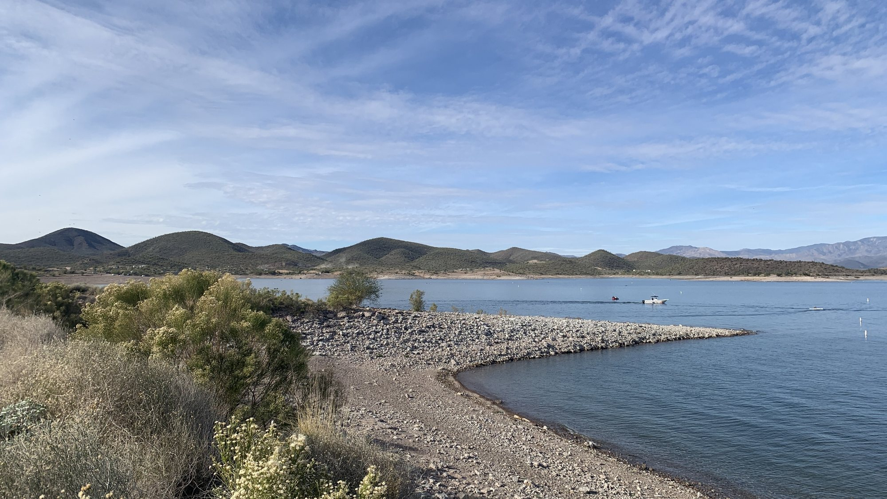
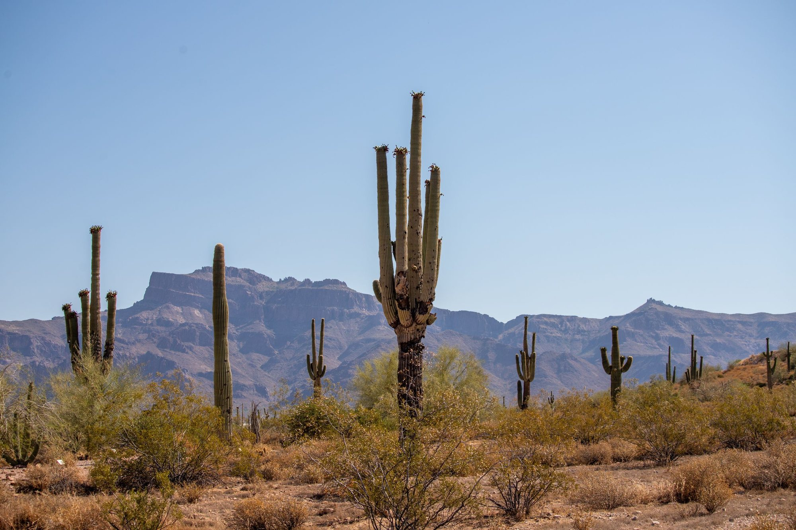
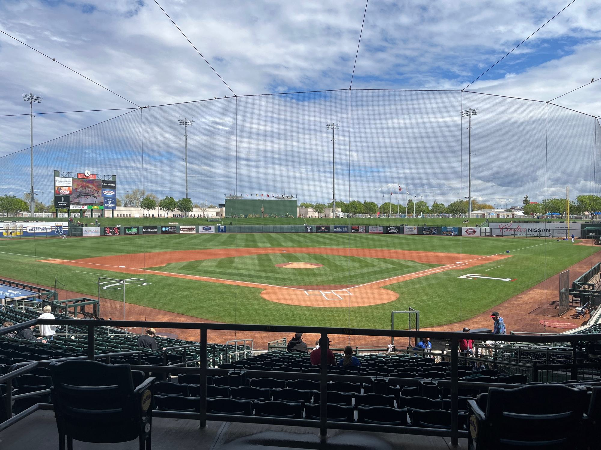
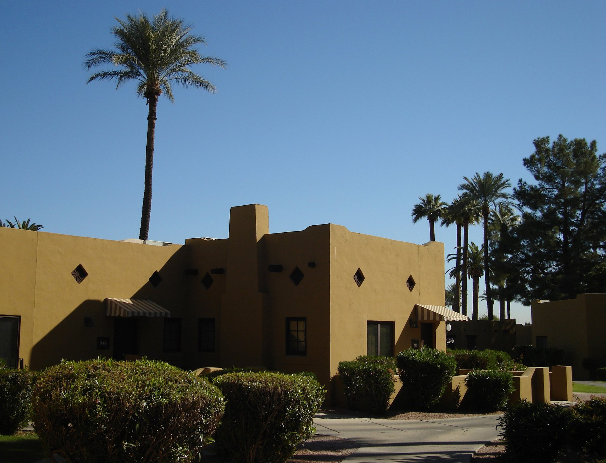
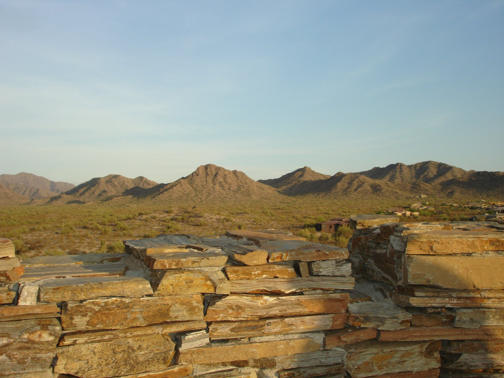
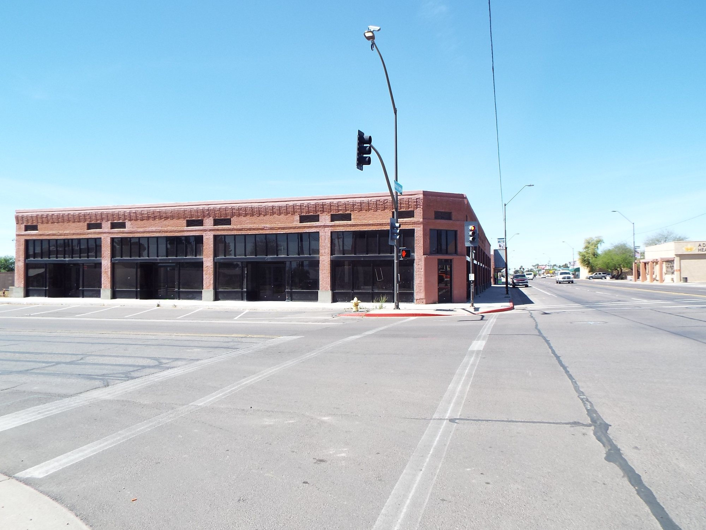
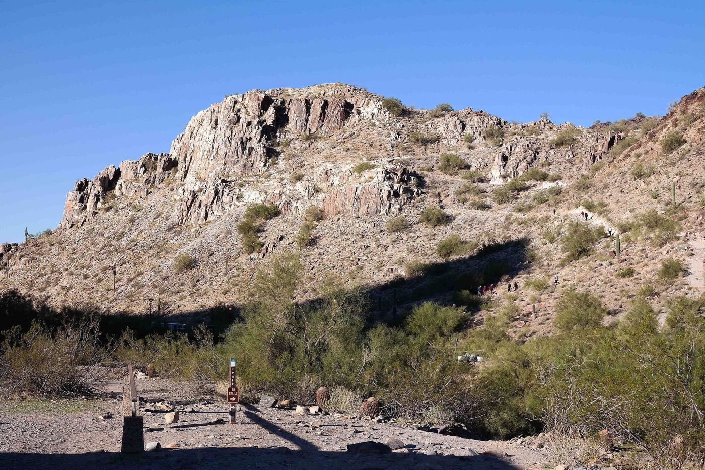
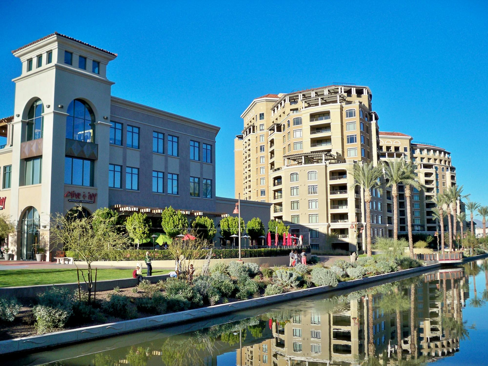
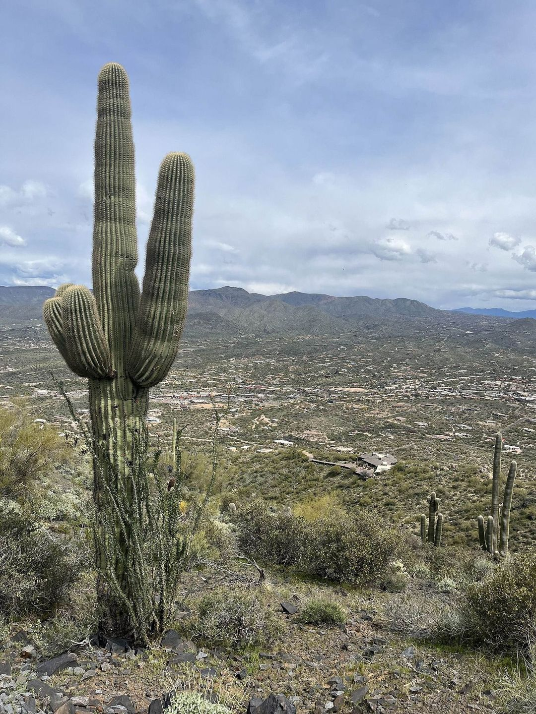
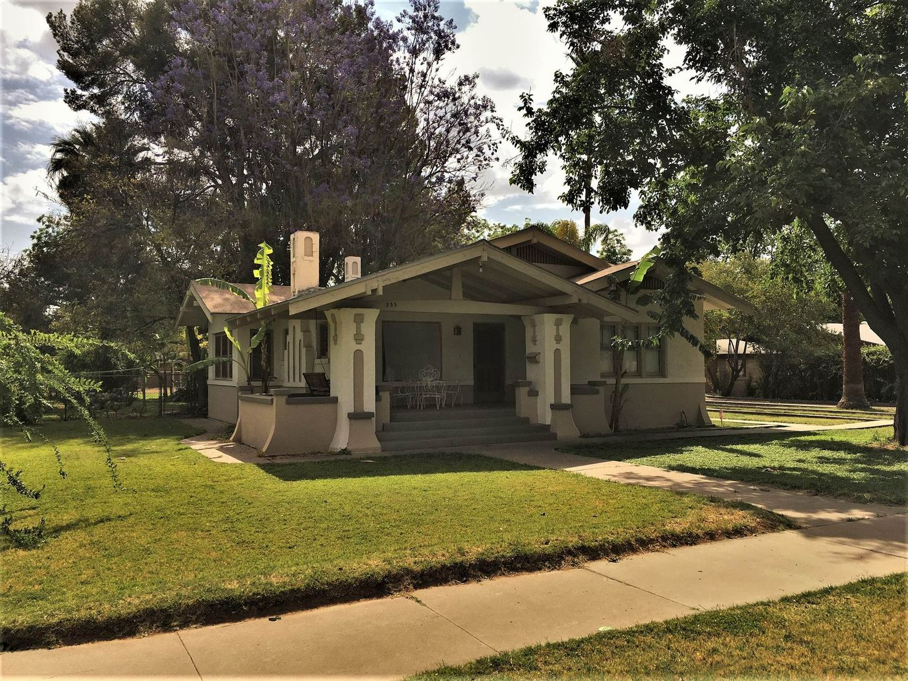

01
Peoria
Her home base: spring training, the P83 district and Lake Pleasant to the north.
See Peoria

Relocation
The climate, the taxes, getting your license and utilities set up, and towns across the Valley to explore.
Before you move
Moving to Arizona from another state means a new climate, a new tax picture and a short list of things to set up in your first weeks. This page covers the Phoenix area, with the official source for each fact.
Rebecca Durfey has been licensed in Arizona since 2002 and works from Peoria across the Valley. When you know which towns interest you, she can set up a home search before you arrive.
At a glance
Normal daily highs at Phoenix Sky Harbor run 106.5°F in July and 67.6°F in January, with about 7.22 inches of rain a year. Monsoon season runs June 15 to September 30.
Sources: NOAA 1991 to 2020 normals, NWS Phoenix, NWS monsoon
Arizona taxes individual income at a flat 2.5% for all income levels and filing statuses, from tax year 2023 on.
Source: Arizona Department of Revenue, read October 2026
The County Assessor values your home and the Treasurer sends the bill, in two halves due October 1 and March 1.
Sources: Maricopa County, A.R.S. 42-18052
The state constitution bars new taxes on the sale or transfer of real property, so buying or selling a home carries no transfer tax.
Where to live
From Peoria across the Valley to Scottsdale, Cave Creek and Mesa. Each has its own page of homes for sale and what to know.

01
Her home base: spring training, the P83 district and Lake Pleasant to the north.
See Peoria



04
A 1920s Goodyear company town with The Wigwam and palm-lined paths.
See Litchfield Park







Your first weeks
Driver license and plates. Arizona's Motor Vehicle Division says to register your vehicle as soon as you become a resident and to get an Arizona driver license (ADOT MVD). State law (A.R.S. 28-2001) lists who counts as a resident for vehicle purposes.
Electricity. Homes in Maricopa County get power from SRP or APS, depending on the address; either can tell you which serves a home (Maricopa County). APS asks for at least three business days' notice to start service (APS).
Water, sewer and trash. Usually your city: for example Peoria or Phoenix, where trash and recycling are added when you open a water account.
Questions
At Phoenix Sky Harbor the normal July high is 106.5°F and the normal July low is 84.5°F (NOAA 1991 to 2020 normals).
The nearest official normals are for Phoenix Sky Harbor: a normal January high of 67.6°F and a normal January low of 46.0°F (NOAA 1991 to 2020 normals).
Yes, a flat 2.5% for all income levels and filing statuses, from tax year 2023 on (Arizona Department of Revenue).
Once you become an Arizona resident (ADOT MVD). State law lists who counts as a resident for vehicle purposes: for example, spending seven months or more in Arizona in a calendar year, working here, or registering to vote here (A.R.S. 28-2001).
Resources
Contact
Call Rebecca at 623-297-4536 or send a note through the contact page. She can talk you through the towns and set up a home search before you arrive.